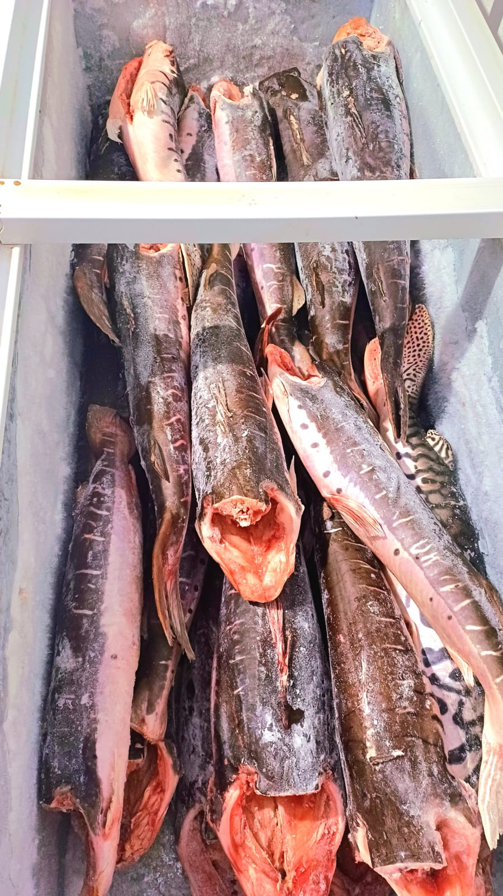
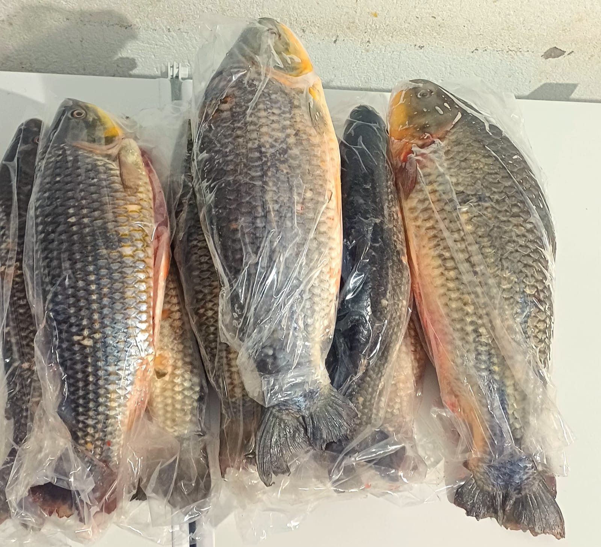

Rio

Pintado Fresco
Pseudoplatystoma corruscans
O rei do Rio Paraguai. Carne firme, saborosa e com pouquíssimas espinhas. Disponível inteiro, em postas ou em filé.
Peixes de rio e tanque selecionados com todo o cuidado do Pantanal.

Pseudoplatystoma corruscans
O rei do Rio Paraguai. Carne firme, saborosa e com pouquíssimas espinhas. Disponível inteiro, em postas ou em filé.

Piaractus mesopotamicus
Sabor marcante e carne suculenta. Disponível inteiro, retalhado ou em ventrecha — a parte mais gordurosa e apreciada.
Metynnis spp.
Primo menor do Pacu, com carne delicada e saborosa. Excelente frito inteiro com limão e sal grosso.

Leporinus macrocephalus
Peixe típico da bacia do Paraguai. Carne macia e sabor suave, ótimo assado inteiro ou em postas no ensopado.

Oreochromis niloticus
Criada em tanque sustentável. Sabor suave e versátil, disponível inteira ou em filé sem espinhas — ideal para a família toda.